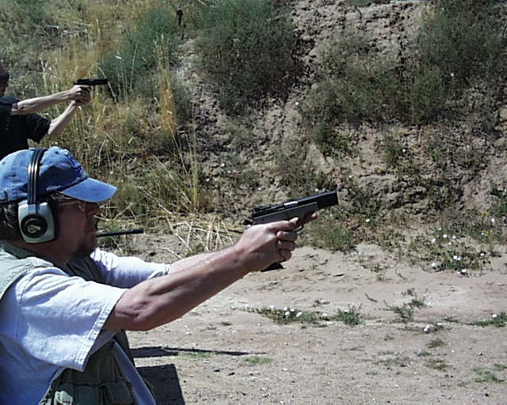

A Day at the Range
L. Neil Smith's Blog
August 18, 2003, continuedPage 18

Me, again, testing my big, lovely EAA Witness .45. This is the "Longslide/Sport" configuration; when EAA (or Tanfoglio) says "longslide", they mean the same length as an issue 1911A1. Their normal length is that of a Commander or a Browning High Power.
This weapon began its life as a 10mm, but I have to admit that the castrated 10-round magazines offended me. They should have held 12 rounds, I gather, but it wasn't EAA's fault. The criminal is former Senator Brady Bill-Bob Dole and his ilk, who desperately need some Viagra for their integrity.
In any case, I obtained from good old Brownell's a slide/barrel kit and a passle of magazines in .45 ACP. They're natural 10-rounders, and somehow that makes me feel better. The slide was supposed to be a drop-on, but it took about three days of stoning and fitting until it ran. The fit is still a little tight, as I'm letting thre weapon "shoot itself in" for best accuracy.
It will convert back to 10mm in about 30 seconds.
I also had a little trouble with an over-eager slide-stop that locked the slide back in the middle of a magazine (only in .45), but I have that fixed, now, and that's what I was testing on this day at the range.
It worked perfectly!
To Page 17 Page 18 To Page 19